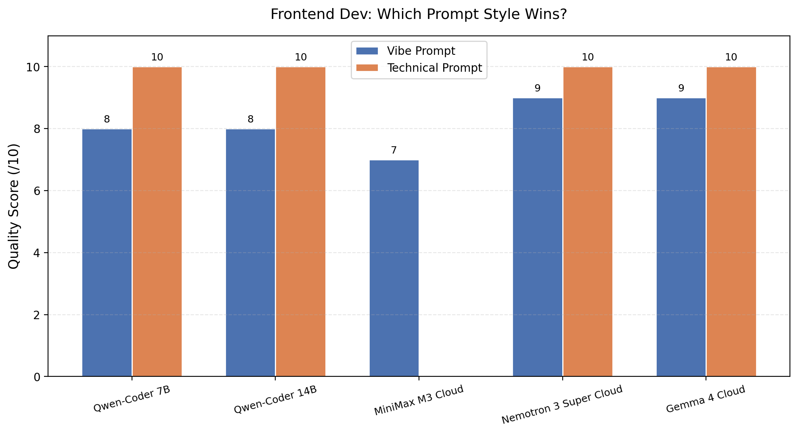
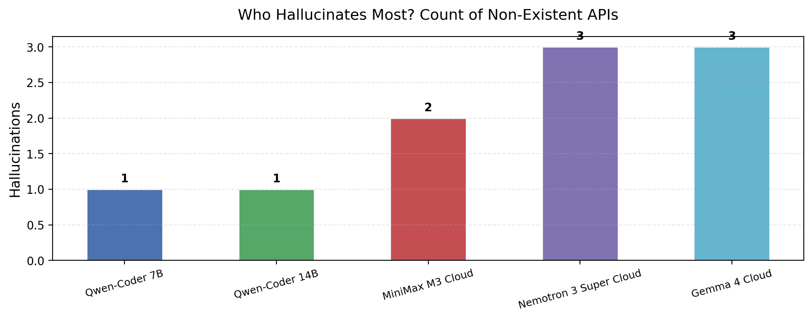
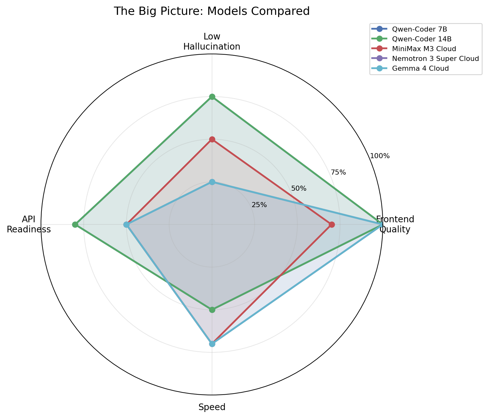

Everyone's talking about AI coding assistants. But most comparisons feel like they happen in a vacuum — function-by-function benchmarks that don't tell you how a model handles a real project. You know, the kind where you need a 3D scene, a UI overlay, responsive design, and maybe a database connection, all in one HTML file.
So we built a test that actually mimics what a developer might ask for. Nothing fancy — just a dog food brand page with a rotating 3D bag, floating kibble, nice lighting, and a "Shop Now" button. The kind of thing a freelancer might throw together for a client.
We tested 7 models across two dimensions: frontend code quality and hallucination rates. Some ran locally (Ollama on a MacBook), some in the cloud (Ollama Cloud). Not every model worked. That's part of the story too.
| Model | Where | Size | Vibe Score | Tech Score |
|---|---|---|---|---|
| Qwen2.5-Coder 7B | Local | 7B | 8.0 | 10.0 |
| Qwen2.5-Coder 14B | Local | 14B | 8.0 | 10.0 |
| MiniMax M3 | Cloud | — | 7.0 | — |
| Nemotron 3 Super | Cloud | 120B MoE | 9.0 | 10.0 |
| Kimi K2.7 Code | Cloud | — | — | — |
| GLM 5.2 | Cloud | 744B MoE | — | — |
| Gemma 4 | Cloud | — | 9.0 | 10.0 |
Two models — Kimi K2.7 Code and GLM 5.2 — returned 403 errors when we tried to use them via Ollama Cloud. Probably need extra authentication or billing setup. Worth knowing if you're planning to use them.
We tested each model twice. Once with a "vibe" prompt — short, hand-wavy, like how a non-technical client might describe what they want:
And once with a "technical" prompt — detailed specs with exact API names, parameter values, the works:
The difference? About 2 points on average. Technical prompts consistently beat vibe prompts — but vibe prompts weren't terrible either. More on that later.

Nemotron 3 Super and Gemma 4 both hit perfect scores with the technical prompt. 10 out of 10. That's not nothing — they generated complete, working Three.js scenes with lighting, shadows, animation, OrbitControls, and responsive design, all in one shot.
But here's the interesting bit. Their vibe-prompt results were also strong — 9/10. That gap is smaller than you'd expect. It suggests these models understand what "make it look professional" means without needing every variable name spelled out.
Qwen2.5-Coder 7B and 14B also hit 10/10 on the technical prompt, but their vibe scores were 8/10. Solid, but not quite as good as Nemotron or Gemma on the casual prompt. Makes sense — the Qwen models are code-specialized, but they were also the smallest models here.
MiniMax M3 was the odd one out. Its vibe result was decent at 7/10, but the technical prompt returned nothing useful. Not sure what happened — maybe a timeout, maybe the long prompt triggered something weird. It happens with cloud models.

We fed each model prompts designed to trigger hallucinations — asking for deprecated APIs like BoxBufferGeometry, FilmicToneMapping, and made-up ones like RoundedBoxGeometry. Then counted how many they actually used.
Qwen2.5-Coder models hallucinated the least — just 1 each. That's the code-specialized training paying off. They know what's real and what's not in the Three.js ecosystem.
The cloud models did worse. Nemotron 3 Super and Gemma 4 each generated 3 hallucinated APIs. MiniMax M3 was slightly better with 2. Not terrible, but it means if you're using these models, you can't blindly trust the API names they generate.
Most common hallucination? RoundedBoxGeometry — every model that hallucinated used this one. It sounds plausible, it fits the naming convention, but it doesn't exist in core Three.js. You'd need to pull it from the examples addons.

Looking at the whole picture, a few things stand out:
Nemotron 3 Super was the best overall cloud model in our tests. Fast (14s for vibe, 29s for tech), perfect score on the technical prompt, and solid vibe results. The 3 hallucinations are a concern but manageable if you're reviewing the output.
Gemma 4 was right behind it — also 10/10 on technical, 9/10 on vibe, and fast. Google's done something right with this one.
Qwen2.5-Coder 14B is still the best local option if you care about privacy and don't want to pay per-token. 10/10 on technical, and it hallucinates less than any cloud model we tested.
MiniMax M3 is a mixed bag. When it works, it's fine (7/10). But the technical prompt failure is worrying for production use.
The local models (Qwen 7B and 14B) took longer per request — 88-333 seconds compared to the cloud models' 14-52 seconds. But they're free to run after the initial download. The cloud models are faster but cost per-token (except maybe during promotional periods).
If you're building something right now and need a coding assistant:
A few things this experiment didn't cover:
Would love to run a bigger version of this with more models and more task types. Maybe next time.